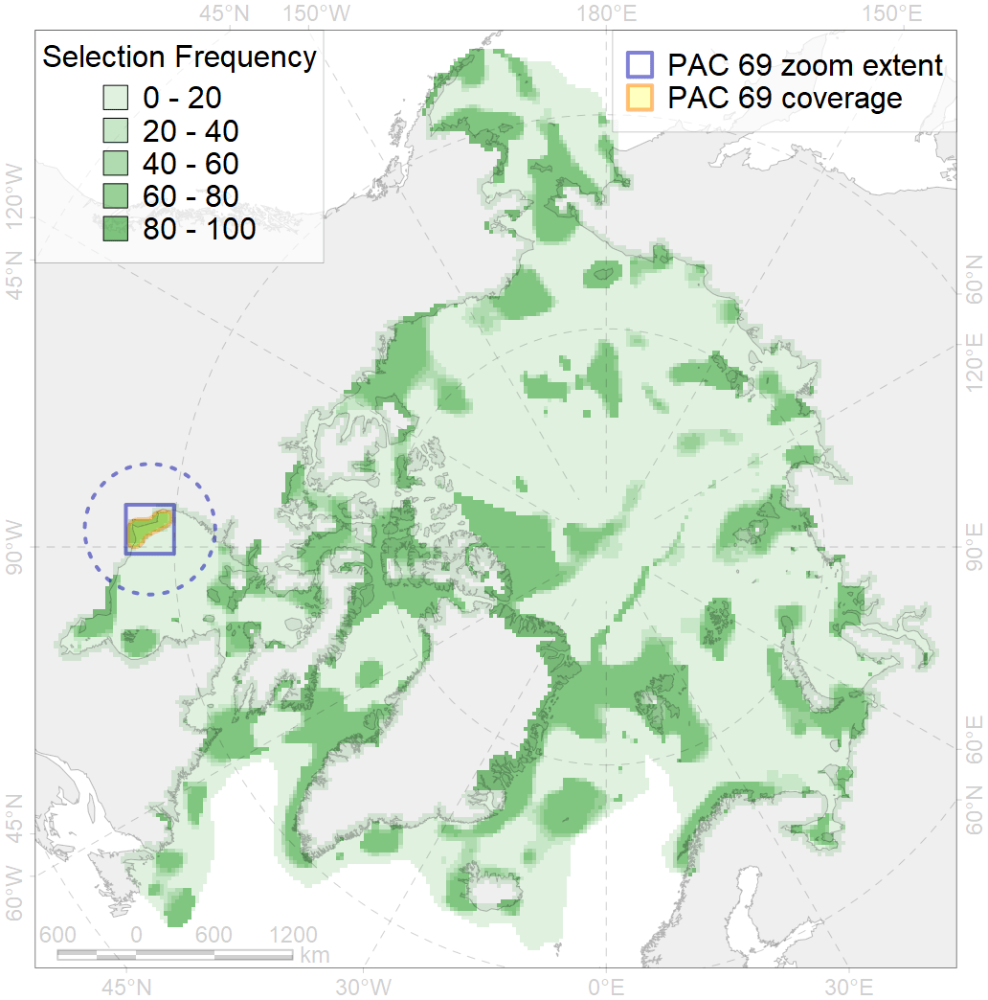
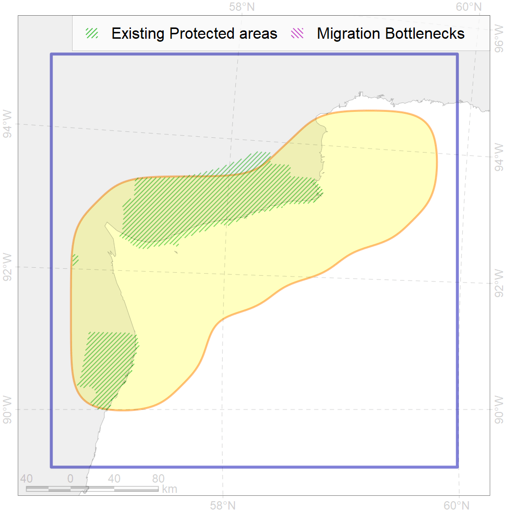

69
For more information regarding this PAC and to conduct custom spatial analysis using the PAC data or any spatial query, please consult Accenter.

0
CFs entirely within the PAC area
6
CFs at least 25% within the PAC area
3
CFs with their target entirely achieved in the PAC
9
CFs with at least 50% of their target achieved in the PAC
| CF ID | CF Name | Proportion in the PAC | Conservation Target | Contribution to ArcNet Target Achievement | PAC’s Contribution to the Achieved Target |
|---|---|---|---|---|---|
| 5032 | Beluga (Delphinapterus leucas), Western Hudson Bay stock, summer grounds / core areas | 85.0% | 72.0% | 112.9% | 98.9% |
| 9037 | Polar bear (Ursus maritimus), Western Hudson Bay subpopulation, denning grounds | 68.2% | 64.8% | 98.8% | 96.1% |
| 7224 | Kelp forests, western Hudson Bay | 59.5% | 15.0% | 349.7% | 100.0% |
| 8020 | Biological communities, estuaries, Hudson Bay | 44.2% | 50.0% | 84.5% | 76.2% |
| 5031 | Beluga (Delphinapterus leucas), Western Hudson Bay stock, summer grounds | 36.5% | 48.0% | 65.1% | 63.4% |
| 9019 | Polar bear (Ursus maritimus), Western Hudson Bay subpopulation, home range | 34.6% | 32.4% | 98.8% | 93.5% |
| 8037 | Biological communities, salt marshes, Hudson Bay | 22.9% | 30.0% | 71.1% | 50.5% |
| 6064 | Common eider (Somateria mollissima sedentari) breeding / moulting grounds, Hudson Bay | 14.6% | 55.2% | 24.5% | 24.3% |
| 7168 | Benthic communities, IV.2.1. Shallow James Bay | 11.9% | 6.1% | 176.2% | 20.9% |
| 3128 | Polynya biological communities, western Hudson Bay | 9.6% | 12.0% | 69.4% | 28.2% |
| 4007 | Cisco (Coregonus artedi) feeding / nursery grounds | 6.1% | 32.4% | 16.8% | 11.8% |
| 7028 | Benthic communities, Hudson Bay Zoogeographic enclave | 4.6% | 9.2% | 43.7% | 27.5% |
| 4031 | Brook trout (Salvelinus fontinalis) feeding grounds | 4.0% | 14.4% | 26.7% | 11.1% |
| 4011 | Lake whitefish (Coregonus clupeaformis) feeding grounds | 3.7% | 38.4% | 8.8% | 8.3% |
| 2010 | Bearded seal (Erignatus barbatus) whelping grounds, Hudson Bay | 2.8% | 24.0% | 10.4% | 10.4% |
| 4075 | Fish communities, Hudson Zoogeographic District, High Arctic Shelf Province, Arctic Region | 2.5% | 9.0% | 25.0% | 9.0% |
| 2048 | Ringed seal (Phoca hispida) whelping grounds, Hudson Bay area | 2.5% | 24.0% | 9.3% | 8.7% |